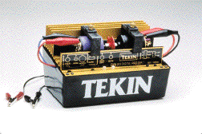

DYN 900 Motor Dyno

Once your motor is on the track, it's too late to find out it's slow. The Dyno lets you check your motor's performance, without even installing it in a car. The DYN900 tells you exactly how your motor will perform, before it's time to race. Measures the critical motor parameters, including dynamic internal resistance. Highly sensitive and accurate electronics also allow you to tune your motor, for maximum power and efficiency. The DYN 900 has tuned World Champion and speed record holders, use it to tune yours too!
FEATURES: Measures Amps, Volts, RPM, and Peak Horsepower Output. Runs off 12v 25 amp DC source. Internal power regulators, and all precision electronic circuitry inside.
- DYN900, PART#8900
- $350.00